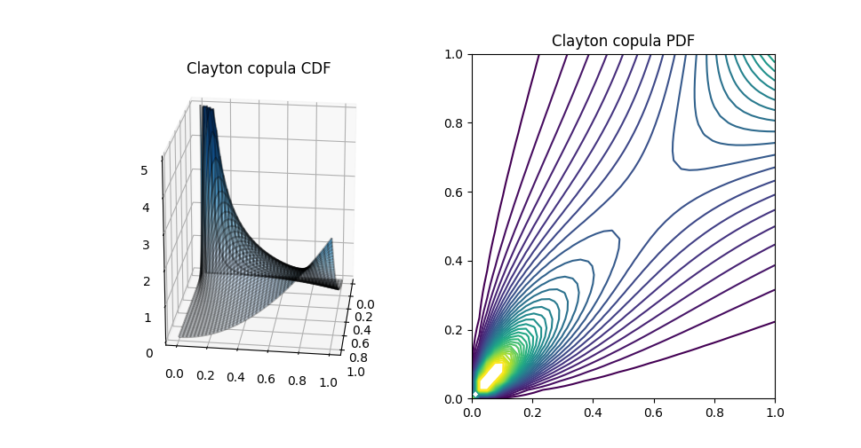
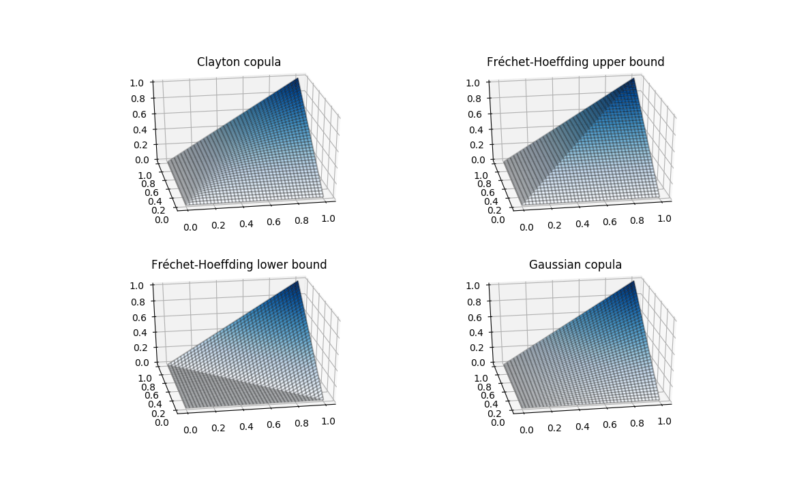
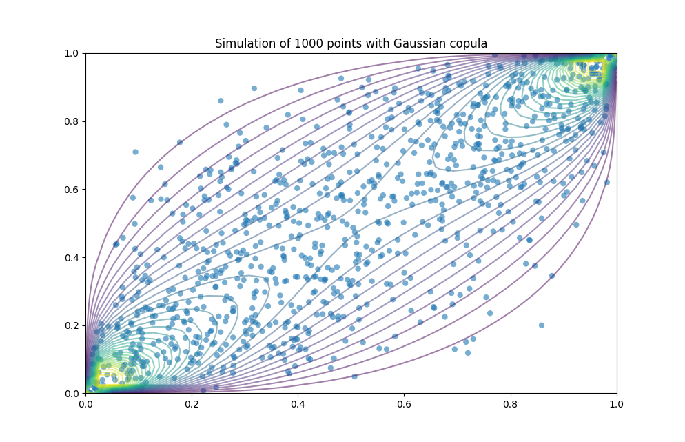

Examples¶
2D Visualization¶
The visualization feature can support 2D and 3D plot of copulas.
 import numpy as np
import matplotlib.pyplot as plt
from matplotlib import cm
from pycopula.copula import ArchimedeanCopula
from mpl_toolkits.mplot3d import Axes3D
from pycopula.visualization import pdf_2d, cdf_2d
# The Clayton copula
clayton = ArchimedeanCopula(family="clayton", dim=2)
# Visualization of CDF and PDF
u, v, C = cdf_2d(clayton)
u, v, c = pdf_2d(clayton)
# Plotting
fig = plt.figure()
ax = fig.add_subplot(121, projection='3d', title="Clayton copula CDF")
X, Y = np.meshgrid(u, v)
ax.set_zlim(0, 5)
ax.plot_surface(X, Y, c, cmap=cm.Blues)
ax.plot_wireframe(X, Y, c, color='black', alpha=0.3)
ax = fig.add_subplot(122, title="Clayton copula PDF")
ax.contour(X, Y, c, levels = np.arange(0,5,0.15))
plt.show()
3D Visualization¶
This sample allows you to plot the CDF of a two-dimensional copula thanks to Matplotlib3D.
 import numpy as np
import matplotlib.pyplot as plt
from matplotlib import cm
from pycopula.copula import *
from mpl_toolkits.mplot3d import Axes3D
from pycopula.visualization import cdf_2d
# Storing the copulas in array
copulas = []
copulas.append(ArchimedeanCopula(family="clayton", dim=2))
copulas.append(Copula(dim=2, name='frechet_up'))
copulas.append(Copula(dim=2, name='frechet_down'))
copulas.append(GaussianCopula(dim=2))
names = [ 'Clayton copula', 'Fréchet-Hoeffding upper bound', 'Fréchet-Hoeffding lower bound', 'Gaussian copula' ]
fig = plt.figure()
index = 1
# For each copula
for c, i in zip(copulas, range(1,5)):
# We get the CDF values
u, v, C = cdf_2d(c)
# Subplotting the current copula's CDF
ax = fig.add_subplot(220 + i, projection='3d', title=names[i-1])
X, Y = np.meshgrid(u, v)
ax.set_zlim(0, 1)
ax.plot_surface(X, Y, C, cmap=cm.Blues)
ax.plot_wireframe(X, Y, C, color='black', alpha=0.3)
ax.view_init(30, 260)
plt.show()
Sampling¶
 import numpy as np
import matplotlib.pyplot as plt
from matplotlib import cm
from pycopula.copula import *
from mpl_toolkits.mplot3d import Axes3D
from pycopula.visualization import pdf_2d
from pycopula.simulation import simulate
# The Gaussian copula withb specified covariance matrix
gaussian = GaussianCopula(dim=2, sigma=[[1, 0.8], [0.8, 1]])
# Visualization of CDF and PDF
u, v, c = pdf_2d(gaussian)
X, Y = np.meshgrid(u, v)
# Sampling of size 1000 with Gaussian copula
sim = simulate(gaussian, 1000)
# Plotting
fig = plt.figure()
ax = fig.add_subplot(111, title="Gaussian copula PDF")
ax.contour(X, Y, c, levels = np.arange(0,5,0.15), alpha=0.5)
plt.scatter([ s[0] for s in sim ], [s[1] for s in sim ], alpha=0.6, edgecolors='none')
plt.title("Simulation of 1000 points with Gaussian copula")
plt.xlim(0, 1)
plt.ylim(0, 1)
plt.show()